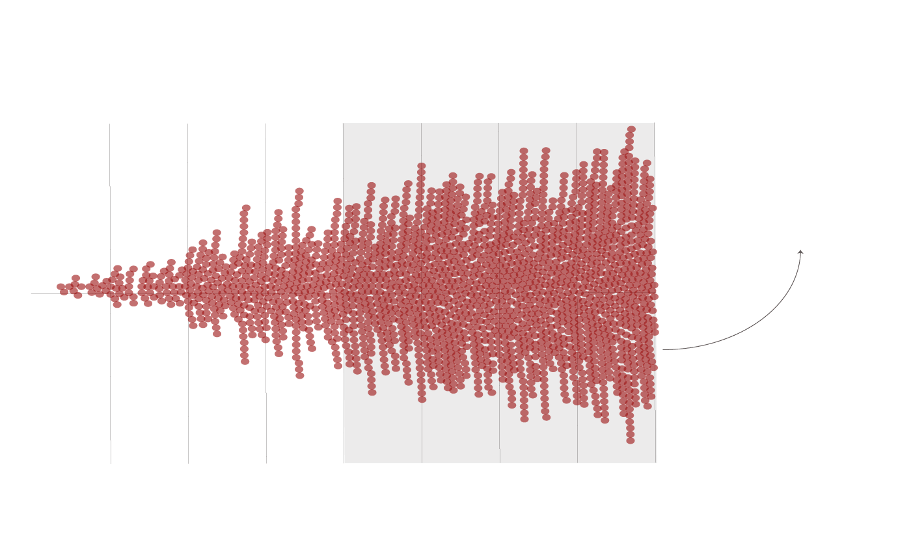
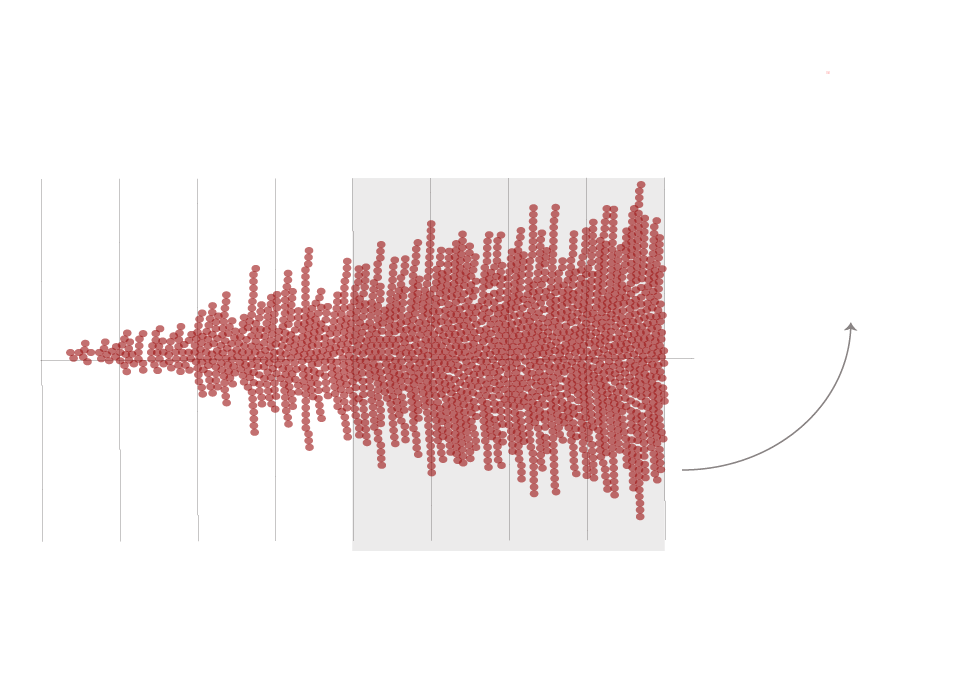
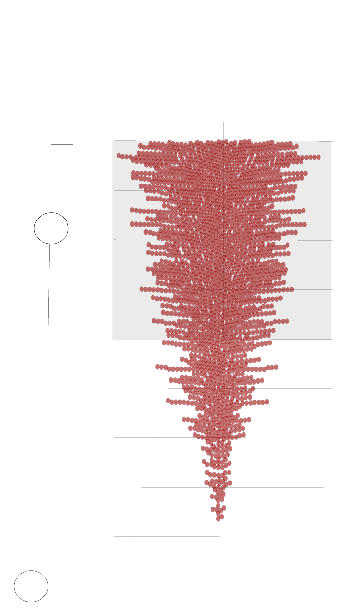

Over 2,000 public schools nationally are within a mile of a
Superfund site
Each dot shows how far a public school is from a Superfund site.
Within the the one mile
radius,majority of public
schools are over half a mile
away from Superfund sites.
0.5
0.75
1.00
0.25
0.0
Distance to Superfund site in miles

Over 2,000 public schools nationally are within a mile of
a Superfund site
Each dot shows how far a public school is from a Superfund site.
Within the the one mile
radius, majority of public
schools are over half a
mile away from Superfund
sites.
0.5
0.75
1.00
0.25
0.0
Distance to Superfund site in miles

Over 2,000 public schools nationally are
within a mile of a Superfund site
Each dot shows how far a public school is
from a Superfund site by miles.
1.00
1
0.75
0.5
Distance to
Superfund
site in
miles
0.25
0.00
Majority of public schools are over half a mile away from
Superfund sites.
1